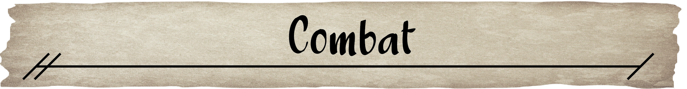

First and foremost, this game is all about having fun. Feel free to change, adapt and alter rules if you feel it would make things more fun for you and your group. Second, this game is a group game meant to be played with around 3-5 players and one person known as the Designer. The Designer's job, like in any good TTRPG, is to build a world and create a plot that the whole group can interact with. Together as a group, you will build stories and memories that can last a lifetime.
As the players interact with the world of Animalia, they will run into problems and obstacles that may require skill to overcome. When situations like this arise, a player's skills will be tested to see if it is possible for them to do the task at hand. If they aren't skilled enough then it is possible they will fail the task they have set out to do.
There are three main skills in this system: the Arm skill, the Leg skill, and the Head skill.
The Arm skill is the amount of skill you have when you use your arms, hands, or any part of your body between the hips and the neck. This can be used for things such as wielding a sword, punching someone, stealing something, or playing the guitar.
The Leg skill is the amount of skill you have when it comes to using your legs. Tails, feet, and other body parts below one's torso would also be considered to fall under the Leg skill. Actions you could take that involve using this skill could be running, jumping, kicking, carrying heavy things, avoiding attacks, or balancing.
When it comes to the Head skill, this skill is used for any task that requires you to use things associated with one's head. That could be using the brain, eyes, ears, nose, or anything above the shoulders of a character. Tasks that would require you to make a Head skill check would be, spotting a hidden treasure, convincing someone of something, biting, screaming, or recalling information read in a book.
